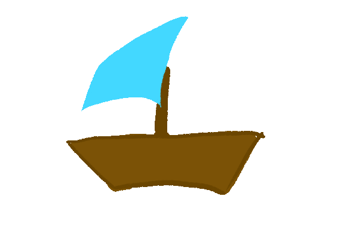
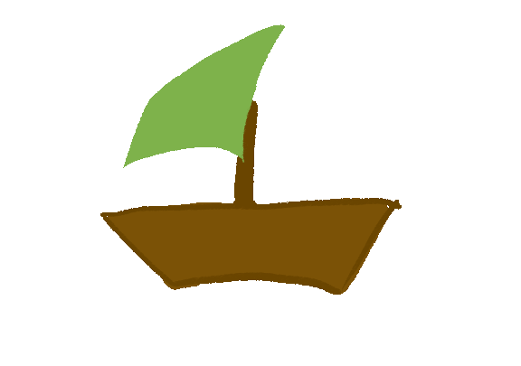
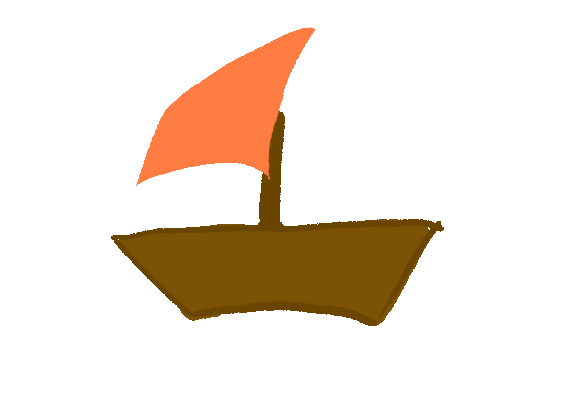
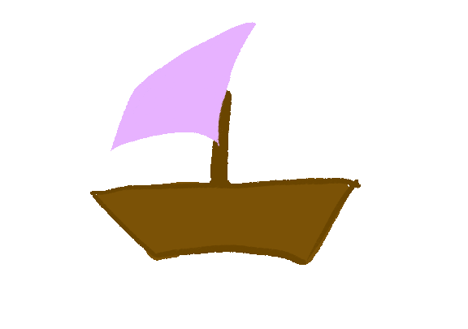
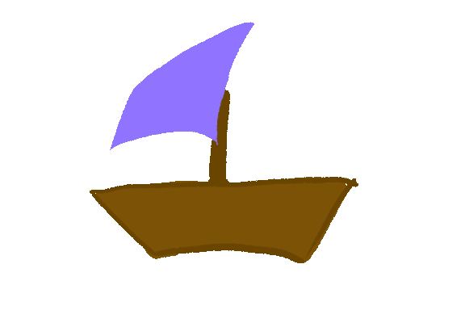
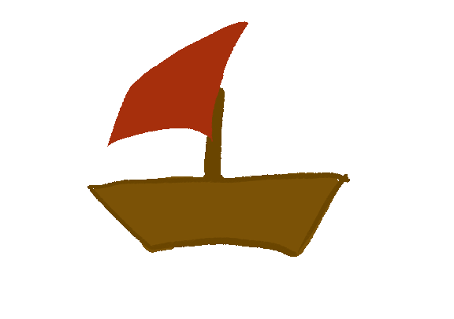
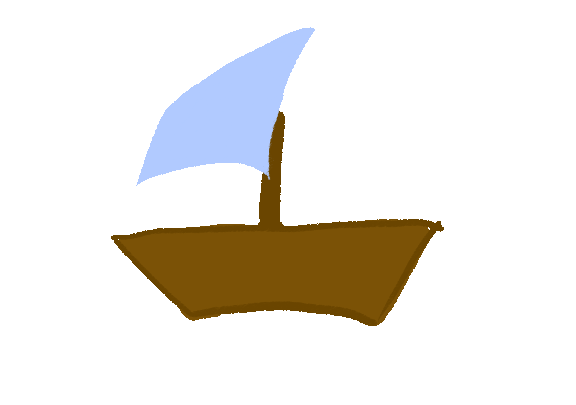
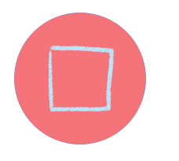
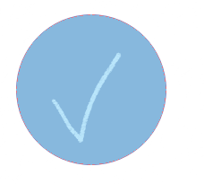

// ── Audio ─────────────────────────────────────────────────────────────────
const audio = document.getElementById('bg-audio');
const icon = document.getElementById('mute-icon');
const volumeBar = document.getElementById('volume-bar');
// iOS requires both click and touchstart
function startAudio() {
const playPromise = audio.play();
if (playPromise !== undefined) {
playPromise.catch(() => {
// Autoplay blocked — wait for next interaction
});
}
document.body.removeEventListener('click', startAudio);
document.body.removeEventListener('touchstart', startAudio);
}
document.body.addEventListener('click', startAudio);
document.body.addEventListener('touchstart', startAudio, { passive: true });
function getVolumeIcon(volume) {
if (volume == 0 || audio.muted) return 'icons/mute.png';
if (volume <= 0.25) return 'icons/mute1.png';
if (volume <= 0.65) return 'icons/mute2.png';
return 'icons/mute3.png';
}
document.body.addEventListener('touchstart', function startAudio() {
audio.play();
document.body.removeEventListener('touchstart', startAudio);
}, { once: true });
function toggleMute() {
if (audio.muted) {
audio.muted = false;
volumeBar.value = audio.volume || 1;
} else {
audio.muted = true;
volumeBar.value = 0;
}
icon.src = getVolumeIcon(audio.muted ? 0 : audio.volume);
if (window.innerWidth <= 768) {
volumeBar.classList.toggle('visible');
}
}
volumeBar.addEventListener('input', function() {
audio.volume = parseFloat(volumeBar.value);
audio.muted = audio.volume === 0;
icon.src = getVolumeIcon(audio.volume);
});
// ── Moderator Mode ────────────────────────────────────────────────────────
let moderatorMode = false;
const MODERATOR_PASSWORD = 'diginat';
document.addEventListener('keydown', function(e) {
if (e.ctrlKey && e.shiftKey && e.key === 'M') {
if (moderatorMode) {
moderatorMode = false;
document.body.classList.remove('moderator-mode');
} else {
const input = prompt('Enter moderator password:');
if (input === null) return;
if (input === MODERATOR_PASSWORD) {
moderatorMode = true;
document.body.classList.add('moderator-mode');
} else {
alert('Incorrect password.');
}
}
}
});
// ── Image Retry ───────────────────────────────────────────────────────────
document.addEventListener('DOMContentLoaded', function() {
document.querySelectorAll('img').forEach(img => {
if (!img.complete || img.naturalWidth === 0) {
const src = img.src;
img.src = ''; img.src = src;
}
});
});
// ── Info Window ───────────────────────────────────────────────────────────
function toggleInfo() {
const existing = document.getElementById('info-window');
if (existing) { existing.remove(); return; }
const savedText = `Sound of Wind is an archive meant to connect those in the diaspora. This project stems from the strong choir culture in Latvia and its diasporas, and honors the legacy of it.
Each boat is a digital choir cover of a song, that each of us took with us into the diaspora.
HOW TO USE:
1. Add a song - click on the big plus button and add a beloved song from your home town.
2. Record - Once your boat is added, record your song.
3. Accept - listen back to your recording and decide if it's the right one.
4. Choir - by pressing the person icon at the top of the window you can activate choir mode. This means when you record you can hear all the previous recordings.
5. Explore - if you recognize a song, add your part to it too.
6. Library - view the full list of boats in the library tab (the three boats). There you can listen back and share stories about specific songs or travels.`;
const win = document.createElement('div');
win.id = 'info-window';
win.classList.add('info-window');
win.innerHTML = `
${savedText}
`;
document.body.appendChild(win);
}
// ── Navigation ────────────────────────────────────────────────────────────
function openLibrary() {
window.location.href = 'library.html';
}
// ── Boat ──────────────────────────────────────────────────────────────────
const boatSaves = [];
const occupiedZones = [];
const boatW = 150;
const boatH = 150;
const labelH = 10;
function handleAdd() {
const addIcon = document.getElementById('add-icon');
addIcon.src = 'icons/add1.png';
setTimeout(() => { addIcon.src = 'icons/add.png'; }, 300);
openDialogue();
}
function openDialogue() {
const overlay = document.createElement('div');
overlay.id = 'overlay';
overlay.classList.add('overlay');
overlay.innerHTML = `
Add a Boat
Song Name
Starting Location
Destination
Choose a Boat







Please select a boat.
Submit
Cancel
`;
document.body.appendChild(overlay);
document.querySelectorAll('.boat-option').forEach(img => {
img.addEventListener('click', function() {
document.querySelectorAll('.boat-option').forEach(i => i.classList.remove('selected'));
this.classList.add('selected');
});
});
}
function closeDialogue() {
const overlay = document.getElementById('overlay');
if (overlay) overlay.remove();
}
function submitBoat() {
const song = document.getElementById('input-song').value.trim();
const from = document.getElementById('input-from').value.trim();
const to = document.getElementById('input-to').value.trim();
const selected = document.querySelector('.boat-option.selected');
if (!song || !from || !to) { alert('Please fill in all three fields.'); return; }
if (!selected) { document.getElementById('boat-error').style.display = 'block'; return; }
const boatFile = selected.getAttribute('data-boat');
closeDialogue();
spawnBoat(song, from, to, boatFile);
}
function rectsOverlap(a, b, padding) {
return !(
a.right + padding < b.left ||
a.left - padding > b.right ||
a.bottom + padding < b.top ||
a.top - padding > b.bottom
);
}
function buildWrapper(song, from, to, boatFile, x, y, boatId) {
const isMobile = window.innerWidth <= 768;
const wrapper = document.createElement('div');
wrapper.style.position = isMobile ? 'absolute' : 'fixed';
wrapper.style.left = x + 'px';
wrapper.style.top = y + 'px';
wrapper.style.width = boatW + 'px';
wrapper.style.zIndex = '50';
wrapper.style.textAlign = 'center';
wrapper.style.pointerEvents = 'auto';
wrapper.dataset.boatId = boatId;
wrapper._dragMoved = false;
wrapper.innerHTML = `
${song}
From ${from} to ${to}
✕
`;
document.body.appendChild(wrapper);
wrapper.querySelector('.delete-boat-btn').addEventListener('click', function(e) {
e.stopPropagation();
deleteBoat(boatId, wrapper);
});
wrapper.querySelector('.boat-gif').addEventListener('click', function() {
if (wrapper._dragMoved) return;
openBoatWindow(song, from, to, this, boatId);
});
makeDraggable(wrapper);
return wrapper;
}
function spawnBoat(song, from, to, boatFile) {
const padding = 10;
const isMobile = window.innerWidth <= 768;
const canvasW = window.innerWidth;
const canvasH = window.innerHeight;
const maxY = canvasH * 0.90;
const minY = 100;
const blocked = [];
document.querySelectorAll('.audio-controls, .mute-btn, .add-btn').forEach(el => {
const r = el.getBoundingClientRect();
blocked.push({ left: r.left, right: r.right, top: r.top, bottom: r.bottom });
});
occupiedZones.forEach(z => blocked.push(z));
let placed = false, attempts = 0;
while (!placed && attempts < 100) {
attempts++;
const x = Math.random() * (canvasW - boatW);
const y = minY + labelH + Math.random() * (maxY - minY - boatH - labelH);
const candidate = { left: x, right: x + boatW, top: y - labelH, bottom: y + boatH };
if (!blocked.some(b => rectsOverlap(candidate, b, padding))) {
const boatId = Date.now().toString();
buildWrapper(song, from, to, boatFile, x, y, boatId);
occupiedZones.push(candidate);
const newBoat = { id: boatId, song, from, to, boatFile, x, y, audios: [], audioMap: {} };
boatSaves.push(newBoat);
saveBoat(newBoat);
placed = true;
}
}
if (!placed) alert('No space left for more boats!');
}
function repositionBoats() {
const isMobile = window.innerWidth <= 768;
const canvasW = window.innerWidth;
const canvasH = window.innerHeight;
document.querySelectorAll('[data-boat-id]').forEach(wrapper => {
wrapper.style.position = isMobile ? 'absolute' : 'fixed';
let x = Math.max(0, Math.min(canvasW - wrapper.offsetWidth, parseFloat(wrapper.style.left)));
let y = Math.max(0, Math.min(canvasH - wrapper.offsetHeight, parseFloat(wrapper.style.top)));
wrapper.style.left = x + 'px';
wrapper.style.top = y + 'px';
const boat = boatSaves.find(b => b.id === wrapper.dataset.boatId);
if (boat) { boat.x = x; boat.y = y; saveBoat(boat); }
});
}
window.addEventListener('resize', repositionBoats);
// ── Boat Window ───────────────────────────────────────────────────────────
function openBoatWindow(song, from, to, boatEl, boatId) {
const existing = document.getElementById('boat-window');
if (existing) existing.remove();
const rect = boatEl.getBoundingClientRect();
const maxWinHeight = window.innerHeight * 0.8;
let left = rect.right + 10;
let top = rect.top;
if (left + 320 > window.innerWidth) left = rect.left - 330;
if (top + maxWinHeight > window.innerHeight) top = window.innerHeight - maxWinHeight - 10;
if (top < 10) top = 10;
const win = document.createElement('div');
win.id = 'boat-window';
win.classList.add('boat-window');
win.style.left = left + 'px';
win.style.top = top + 'px';
win.dataset.choirMode = 'false';
win.dataset.boatId = boatId;
win.innerHTML = `
✕
`;
container.appendChild(audioRow);
});
} else if (boat.audios && boat.audios.length > 0) {
// Legacy fallback for boats saved before audioMap was introduced
boat.audios.forEach((base64, i) => {
const audioRow = document.createElement('div');
audioRow.classList.add('audio-row');
audioRow.innerHTML = `
✕
`;
container.appendChild(audioRow);
});
}
}
}
function closeBoatWindow() {
const win = document.getElementById('boat-window');
if (win) win.remove();
}
// ── Recording ─────────────────────────────────────────────────────────────
let mediaRecorder = null;
let audioChunks = [];
let waveformAnim = null;
let analyser = null;
let audioCtx = null;
let playAllActive = false;
// Add this before startRecording()
async function unlockAudio() {
if (!audioCtx) {
audioCtx = new (window.AudioContext || window.webkitAudioContext)();
}
if (audioCtx.state === 'suspended') {
await audioCtx.resume();
}
}
function startRecording() {
const win = document.getElementById('boat-window');
const isChoir = win && win.dataset.choirMode === 'true';
const micConstraints = isChoir
? { audio: { echoCancellation: false, noiseSuppression: false, autoGainControl: false } }
: { audio: { echoCancellation: true, noiseSuppression: true, autoGainControl: true } };
navigator.mediaDevices.getUserMedia(micConstraints).then(async function(stream) {
audioCtx = new (window.AudioContext || window.webkitAudioContext)();
await audioCtx.resume(); // iOS requires this
analyser = audioCtx.createAnalyser();
audioCtx.createMediaStreamSource(stream).connect(analyser);
analyser.fftSize = 256;
if (isChoir) {
document.querySelectorAll('#saved-audio-container audio').forEach(a => {
a.currentTime = 0; a.play();
});
}
document.getElementById('record-hint').style.display = 'none';
const canvas = document.getElementById('waveform-canvas');
canvas.style.display = 'block';
drawWaveform(analyser, canvas);
document.getElementById('boat-footer').innerHTML = `

`;
const mimeType = MediaRecorder.isTypeSupported('audio/mp4')
? 'audio/mp4'
: 'audio/webm';
audioChunks = [];
mediaRecorder = new MediaRecorder(stream, { mimeType });
mediaRecorder.ondataavailable = e => audioChunks.push(e.data);
mediaRecorder.onstop = function() {
stream.getTracks().forEach(t => t.stop());
cancelAnimationFrame(waveformAnim);
audioCtx.close();
document.querySelectorAll('#saved-audio-container audio').forEach(a => {
a.pause(); a.currentTime = 0;
});
const blob = new Blob(audioChunks, { type: mimeType });
const url = URL.createObjectURL(blob);
document.getElementById('waveform-canvas').style.display = 'none';
document.getElementById('boat-footer').innerHTML = `

`;
document.getElementById('boat-window').appendChild(acceptDiscard);
updatePreviewChoir();
};
mediaRecorder.start();
}).catch(() => alert('Microphone access was denied.'));
}
function stopRecording() {
if (mediaRecorder && mediaRecorder.state !== 'inactive') mediaRecorder.stop();
}
function acceptRecording(url) {
document.getElementById('accept-discard-row')?.remove();
document.getElementById('boat-footer').innerHTML = `
`;
document.getElementById('record-hint').style.display = 'block';
fetch(url).then(r => r.blob()).then(blob => {
const reader = new FileReader();
reader.onloadend = async function() {
const base64 = reader.result;
const audioId = Date.now().toString();
const container = document.getElementById('saved-audio-container');
const audioRow = document.createElement('div');
audioRow.classList.add('audio-row');
audioRow.dataset.audioId = audioId;
audioRow.innerHTML = `
✕
`;
container.appendChild(audioRow);
const win = document.getElementById('boat-window');
const boatId = win?.dataset.boatId;
if (boatId) {
const boat = boatSaves.find(b => b.id === boatId);
if (boat) {
if (!boat.audioMap) boat.audioMap = {};
boat.audioMap[audioId] = base64;
boat.audios = Object.values(boat.audioMap);
await saveBoat(boat);
}
}
};
reader.readAsDataURL(blob);
});
}
function discardRecording() {
document.getElementById('accept-discard-row')?.remove();
document.getElementById('record-hint').style.display = 'block';
document.getElementById('boat-footer').innerHTML = `
`;
}
function drawWaveform(analyser, canvas) {
const ctx = canvas.getContext('2d');
const bufferLen = analyser.frequencyBinCount;
const dataArray = new Uint8Array(bufferLen);
function draw() {
waveformAnim = requestAnimationFrame(draw);
analyser.getByteTimeDomainData(dataArray);
ctx.clearRect(0, 0, canvas.width, canvas.height);
ctx.lineWidth = 2; ctx.strokeStyle = 'rgba(255,255,255,0.8)';
ctx.beginPath();
const sliceW = canvas.width / bufferLen;
let drawX = 0;
for (let i = 0; i < bufferLen; i++) {
const v = dataArray[i] / 128.0;
const y = (v * canvas.height) / 2;
i === 0 ? ctx.moveTo(drawX, y) : ctx.lineTo(drawX, y);
drawX += sliceW;
}
ctx.lineTo(canvas.width, canvas.height / 2);
ctx.stroke();
}
draw();
}
// ── Choir & Playback ──────────────────────────────────────────────────────
function toggleChoir() {
const win = document.getElementById('boat-window');
if (!win) return;
const isChoir = win.dataset.choirMode === 'true';
win.dataset.choirMode = isChoir ? 'false' : 'true';
const btn = document.getElementById('choir-btn');
btn.src = isChoir ? 'icons/solo.png' : 'icons/choir.png';
btn.title = isChoir ? 'Solo' : 'Choir';
if (!isChoir) {
const hint = document.getElementById('record-hint');
if (hint) {
hint.textContent = 'Tip: use headphones for best choir recording';
setTimeout(() => { hint.textContent = 'Press record to add a song'; }, 4000);
}
}
updatePreviewChoir();
}
function updatePreviewChoir() {
const preview = document.getElementById('preview-audio');
if (!preview) return;
const win = document.getElementById('boat-window');
const isChoir = win && win.dataset.choirMode === 'true';
preview.onplay = preview.onpause = preview.onended = null;
if (isChoir) {
preview.onplay = () => document.querySelectorAll('#saved-audio-container audio').forEach(a => { a.currentTime = preview.currentTime; a.play(); });
preview.onpause = () => document.querySelectorAll('#saved-audio-container audio').forEach(a => a.pause());
preview.onended = () => document.querySelectorAll('#saved-audio-container audio').forEach(a => { a.pause(); a.currentTime = 0; });
}
}
function togglePlayAll() {
const audios = Array.from(document.querySelectorAll('#saved-audio-container audio'));
if (audios.length === 0) return;
const btn = document.getElementById('play-btn');
if (!playAllActive) {
playAllActive = true;
btn.src = 'icons/pause.png'; btn.title = 'Pause';
audios.forEach(a => { a.currentTime = 0; a.play(); });
let finished = 0;
audios.forEach(a => {
a.onended = function() {
if (++finished === audios.length) {
playAllActive = false;
btn.src = 'icons/play.png'; btn.title = 'Play';
}
};
});
} else {
playAllActive = false;
btn.src = 'icons/play.png'; btn.title = 'Play';
audios.forEach(a => { a.pause(); a.currentTime = 0; });
}
}
// ── Persistence (Firebase) ────────────────────────────────────────────────
async function saveBoat(boat) {
if (!window.db || !window.fsSetDoc) return;
try {
await window.fsSetDoc(window.fsDoc(window.db, 'boats', boat.id), {
...boat,
audios: boat.audioMap || {}
});
} catch(err) {
console.error('Firestore save error:', err);
}
}
async function restoreBoats() {
if (!window.db || !window.fsGetDocs) return;
try {
const snapshot = await window.fsGetDocs(window.fsCollection(window.db, 'boats'));
snapshot.forEach(docSnap => {
const boat = docSnap.data();
boat.audioMap = typeof boat.audios === 'object' && !Array.isArray(boat.audios)
? boat.audios
: {};
boat.audios = Object.values(boat.audioMap);
boatSaves.push(boat);
buildWrapper(boat.song, boat.from, boat.to, boat.boatFile, boat.x, boat.y, boat.id);
});
} catch(err) {
console.error('Firestore restore error:', err);
}
}
async function deleteBoat(boatId, wrapper) {
if (!confirm('Delete this boat and all its recordings?')) return;
const win = document.getElementById('boat-window');
if (win && win.dataset.boatId === boatId) win.remove();
wrapper.remove();
const index = boatSaves.findIndex(b => b.id === boatId);
if (index !== -1) boatSaves.splice(index, 1);
try {
await window.fsDeleteDoc(window.fsDoc(window.db, 'boats', boatId));
} catch(err) {
console.error('Firestore delete error:', err);
}
}
async function deleteAudio(audioId, btn) {
if (!moderatorMode) return;
if (!confirm('Delete this recording?')) return;
const row = btn.closest('.audio-row');
const win = document.getElementById('boat-window');
const boatId = win?.dataset.boatId;
if (boatId) {
const boat = boatSaves.find(b => b.id === boatId);
if (boat) {
if (!boat.audioMap) boat.audioMap = {};
delete boat.audioMap[audioId];
boat.audios = Object.values(boat.audioMap);
try {
await saveBoat(boat);
row.remove();
} catch(err) {
console.error('Error deleting audio:', err);
}
}
}
}
// ── Dragging ──────────────────────────────────────────────────────────────
function makeDraggable(wrapper) {
let isDragging = false;
let startX, startY, origX, origY;
wrapper.addEventListener('mousedown', function(e) {
if (e.button !== 0 || e.target.classList.contains('delete-boat-btn')) return;
isDragging = true;
wrapper._dragMoved = false;
startX = e.clientX; startY = e.clientY;
origX = parseFloat(wrapper.style.left);
origY = parseFloat(wrapper.style.top);
e.preventDefault();
});
document.addEventListener('mousemove', function(e) {
if (!isDragging) return;
const dx = e.clientX - startX;
const dy = e.clientY - startY;
if (Math.abs(dx) > 3 || Math.abs(dy) > 3) wrapper._dragMoved = true;
if (!wrapper._dragMoved) return;
const isMobile = window.innerWidth <= 768;
const canvasW = window.innerWidth;
const canvasH = window.innerHeight;
wrapper.style.left = Math.max(0, Math.min(canvasW - wrapper.offsetWidth, origX + dx)) + 'px';
wrapper.style.top = Math.max(0, Math.min(canvasH - wrapper.offsetHeight, origY + dy)) + 'px';
});
document.addEventListener('mouseup', function() {
if (!isDragging) return;
isDragging = false;
if (wrapper._dragMoved) {
const boat = boatSaves.find(b => b.id === wrapper.dataset.boatId);
if (boat) {
boat.x = parseFloat(wrapper.style.left);
boat.y = parseFloat(wrapper.style.top);
saveBoat(boat);
}
}
setTimeout(() => { wrapper._dragMoved = false; }, 10);
});
}
// ── Start ─────────────────────────────────────────────────────────────────
if (window.firebaseReady) {
restoreBoats();
} else {
window.addEventListener('firebaseReady', () => restoreBoats());
}